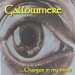

Home Artist links

Gallowmere - ...Changes In My Mind
| Artist: | Gallowmere |
| Title: | ...Changes In My Mind |
| Label: | self produced |
| Length(s): | 32 minutes |
| Year(s) of release: | 2001 |
| Month of review: | [02/2002] |
Line up
Conrad - guitars
Gert-Jan - bass
Dennis - keyboards
Mirjam - vocals
Stefan - drums
Tracks
| 1) | Gallowmere | 6.20
|
| 2) | Tomorrow | 6.10
|
| 3) | The Mummy | 7.49
|
| 4) | Fear (is My Father) | 5.48
|
| 5) | Journey In Vain | 5.58
|
Summary
A mini disc of Gothic/prog metal from the Netherlands. I think this is
a demo disc of some kind.
The music
The sound quality of this disc is not too great, it all sounds a bit flat.
This strengthens my opinion that this is just a demo disc. The first
track opens forcefully. The female vocals are not that strong, the vocal lines
are not that great either. There is plenty of room for keyboards on this track
though lending plenty of melody, but only in support. In addition the rhythm
guitars fill up the rest of the sound spectrum. In the intermezzo the bass
and some easy going percussion get a bit of room after which we get
a rather atmospheric and lonely guitar solo. I think the band made a small
mistake here: the lyrics are talking of Changes In My Mind all the time, but
the song is named for the band, not for the title of the disc. Hmm.
At the end we get some rather melodic piano and the music gets underway again
with plenty of breakful guitar lines. Not bad, but still lacking in distinction
and a bit too repetitive.
The pace is a bit higher on Tomorrow, but the vocals continue to be unsteady.
The line of music continues to be rather heavy progmetal with quite a bit
of keyboards, but the vocals are too obtrusive. The dark rhythm guitars
combined with percussion do hold promise for later. The song is quite catchy
on the whole.
After a moody opening with nice hazy vocals and nice long eerie guitar lines,
The Mummy has a rather noisy overall sound. The drums are a bit too easy going
here, not very inventive. The melody played by the guitar is Arabic sounding,
a reference to the mummy one would surmise. Later the song gets to be quite
hectic with some nice staccato drums and keyboards. The ending is rather
atmospheric again (think Lights In The Night by Flash And The Pan here).
Fear (Is My Father) is the penultimate song. After an opening with distortion,
the bass takes over. The song is in many respects the same as the previous three.
A nice passage is the plodding one where the keyboards play around the guitars.
Journey In Vain opens with acoustic guitar. Later it turns into a rowdy rock
song with plenty of rhythm guitar, but the vocal melody is not bad, and there is
an alternation between the moody verses and the more catchy chorus.
Conclusion
This demo album shows a band with some way to go. The vocals are a weakness.
There is a kind of emotion present, but technically the voice is too wavery,
too unsteady and often simply not appealing enough. The sound is a bit flat,
but this is something I am sure more experience in the studio will help with.
Also, the band has to try and find something distinctive and memorable in their
music. Within their line of music, gothic progmetal, there is plenty of
good competition.
© Jurriaan Hage